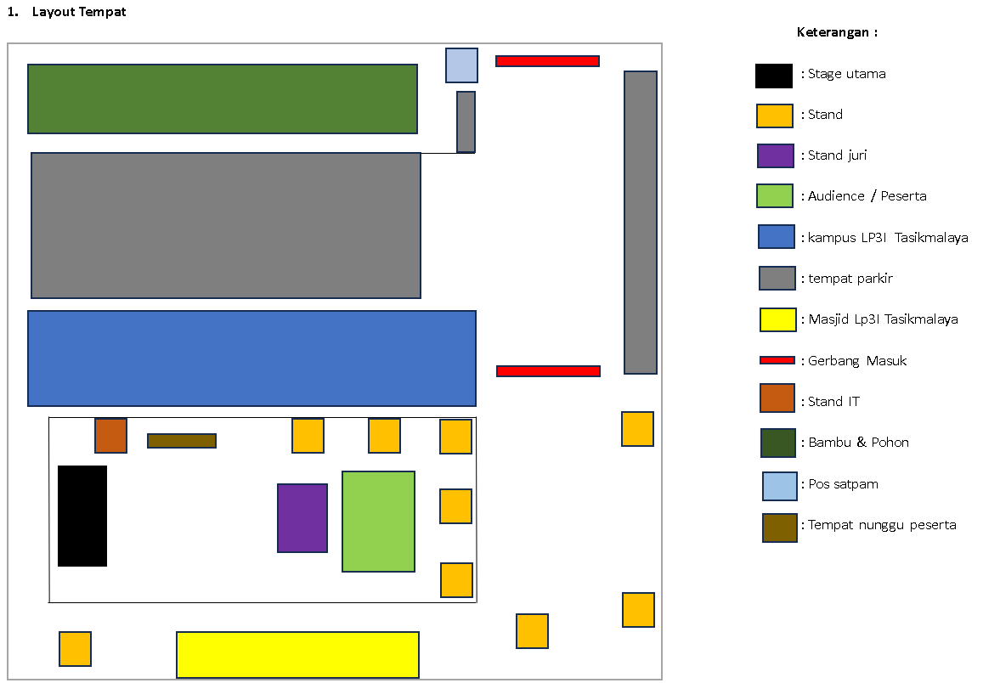

DNC Fest 2024
Latest News
Bagi temen-temen yang belum tau apa itu DNC fest, disini kami akan menjelaskan sedikit tentang DNC fest tersebut.
DNC fest sendiri merupakan singkatan dari (Dance and Cosplay festival), tentunya di tahun ini kita mengambil tema 3 budaya sekaligus, yaitu indonesia x japan x korea
Kalian juga bisa have fun dan foto foto sama cosplayer favorite kalian di event.

Starting from 18 April 2024 at 1 p.m
(GMT +7 / Tasikmalaya Local Time)
Terms & Conditions
1. Tiket hanya dapat dibeli melalui DNCFest2024.com. Tiket hanya untuk masuk ke acara DNC Fest 2024.
2. Pembelian tiket harus menggunakan kartu identitas yang valid. Pastikan data pembelian tiket sesuai dengan data yang valid dan benar (Kartu Identitas/KK/KTP/SIM/Paspor). Tiket tidak dapat diubah setelah pembelian.
3. Dengan membeli tiket DNC Fest 2024, Anda setuju untuk pengumpulan, penyimpanan, dan penggunaan terbatas data pribadi Anda untuk keperluan acara DNC Fest 2024.
4. Penjualan tiket dibatasi maksimal 4 (empat) per transaksi. 1 (satu) alamat email dan 1 (satu) nomor telepon hanya dapat digunakan untuk 1 (satu) transaksi.
5. Nomor kursi untuk semua area duduk akan dipilih otomatis berdasarkan kursi terbaik yang tersedia dalam sistem dan akan dikirim melalui email H-7 sebelum acara.
6. Harga tiket tidak termasuk pajak pemerintah 10% dan biaya admin tiket 5%.
7. Tiket dijual langsung oleh Penyelenggara kepada konsumen. Tiket yang dibeli oleh bisnis atau pedagang yang melanggar Syarat dan Ketentuan penjualan tiket dapat menjadi tidak valid. Tiket yang dibeli dari situs web pihak ketiga dan reseller tidak sah adalah risiko dan tanggung jawab pembeli tiket.
8. Semua penjualan tiket bersifat final, tidak ada pengembalian atau penukaran.
9. Jika konser dibatalkan, tiket akan dikembalikan sesuai dengan ketentuan penyelenggara. Pengembalian tidak termasuk biaya admin tiket, biaya kenyamanan kartu kredit, atau biaya pribadi lainnya.
10. Pemegang Tiket memberikan hak kepada Penyelenggara untuk menggunakan rekaman video dan gambar diam untuk keperluan iklan, publisitas, dan promosi acara tanpa persetujuan lebih lanjut.
CONTACT
Customer Service
Email : liacofficial@gmail.com
Partnership and Sponsorship
Email : barad.fhx@gmail.com